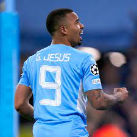

Napoli Signs New Striker to Improve Attack

Italian football club Napoli has signed a new striker in an attempt to improve their attack.
The team has struggled to score goals this season, and the signing of the new striker is
seen as a much-needed boost to their offensive capabilities.
The new signing is a young Brazilian striker named Gabriel Barbosa, also known as Gabigol.
The 25-year-old striker has signed a four-year deal with Napoli, joining the club from
Brazilian club Flamengo. Gabigol has had a successful career in Brazil, scoring 98 goals in
164 appearances for Santos and Flamengo.
Napoli has been looking for a striker who can help them improve their goal-scoring record.
The team has scored just 41 goals in 30 Serie A matches this season, and their lack of
firepower has been a major concern. Gabigol is expected to provide the much-needed spark to
Napoli's attack, with his speed, skill, and ability to score goals.
The signing of Gabigol is a statement of intent from Napoli, as they look to challenge for
the Serie A title next season. The Brazilian striker has been on the radar of several top
European clubs, and Napoli will be hoping that his signing will give them an edge over their
rivals.
Gabigol is not the only new signing for Napoli this season. The team has also signed Matteo
Politano and Andrea Petagna in an attempt to improve their attack. However, it is the
signing of Gabigol that has generated the most excitement among Napoli fans.
Napoli's coach, Gennaro Gattuso, has expressed his delight at the signing of Gabigol. "We
are very happy to have signed Gabigol. He is a young and talented striker who has already
proven himself in Brazil. We believe that he will be a great addition to our team and will
help us achieve our goals."
The signing of Gabigol has also been welcomed by Napoli's players, who are looking forward
to playing alongside the Brazilian striker. "Gabigol is a fantastic player, and we are all
excited to have him in the team. He will bring a lot of energy and goals to our attack, and
I'm sure he will be a great addition to the team," said Napoli midfielder Fabian Ruiz.
The arrival of Gabigol is a sign that Napoli is serious about challenging for the Serie A
title next season. The team has been in good form this season, and with the addition of
Gabigol, they will be hoping to take their performance to the next level. With a strong
defense and now a potent attack, Napoli will be a team to watch out for in the upcoming
season.
Napoli Loses Star Attacker to Injury
Napoli, one of
the top football clubs in Italy, has been hit hard by the news that they will be without
their star attacker for an extended period. The news of the injury has come as a shock to
the club and its supporters, who were hoping to see their team challenge for the Serie A
title this season.
Lorenzo Insigne, who has been an integral part of Napoli's attack for many years, has been
ruled out of action for several weeks due to a thigh injury. The Italian international
suffered the injury during a training session, and it was later revealed that he would
require surgery to fully recover.
Insigne's injury comes at a crucial time for Napoli, who are currently sitting in second
place in the Serie A standings. The team has been in good form this season, with Insigne
playing a key role in their success. The 30-year-old has scored 10 goals and provided 6
assists in 28 Serie A appearances this season, making him one of the most important players
in the team.
Napoli's coach, Gennaro Gattuso, has expressed his disappointment at the news of Insigne's
injury. "It's a big blow for us to lose Lorenzo. He's a top player and an important part of
our team. We will miss him, but we have to move on and find a way to win without him,"
Gattuso said in a press conference.
Insigne's injury is not just a blow to Napoli's hopes of winning the Serie A title this
season, but it could also have an impact on his international career. The Italian national
team is set to play in the European Championships later this year, and Insigne was expected
to be a key player for them. However, his injury could mean that he misses out on the
tournament.
The injury also presents an opportunity for other players in the Napoli squad to step up and
fill the void left by Insigne. Dries Mertens, Hirving Lozano, and Matteo Politano are all
capable attackers who could be called upon to fill the gap left by Insigne's absence.
Despite the setback, Napoli will be determined to continue their strong form and challenge
for the Serie A title. The team has shown that they are capable of winning games without
Insigne, and they will be looking to maintain their momentum in the coming weeks.
Insigne's injury is a reminder of the importance of having a strong squad depth, especially
in a season where teams are playing a lot of games in a short period of time. It is also a
reminder of the fragility of football, where injuries can happen at any time and to any
player.
As Napoli prepares for their next game without Insigne, the team and its supporters will be
hoping that the injury is not as serious as first feared, and that the Italian attacker can
make a speedy recovery and return to the pitch as soon as possible.
Napoli Advances to Quarterfinals of European Competition
Italian
football club Napoli has advanced to the quarterfinals of the Europa League after a 2-1
aggregate win over Spanish side Granada. The Naples-based club secured their place in the
last eight with a 2-0 win in the second leg of their Round of 16 tie.
Napoli was the clear favorite going into the tie, and they showed their class in the second
leg. Goals from Piotr Zielinski and Fabian Ruiz secured the win for the Italian side, who
dominated the game from start to finish. The result was a deserved one for Napoli, who
controlled possession and created numerous scoring opportunities throughout the game.
The win sees Napoli progress to the quarterfinals of the Europa League for the second time
in three seasons. The club reached the quarterfinals in the 2018/19 season, where they were
eventually knocked out by Arsenal.
Napoli's coach, Gennaro Gattuso, expressed his delight at the team's performance. "I'm very
happy with the way we played tonight. We dominated the game and created a lot of chances.
It's a great feeling to be in the quarterfinals, and we'll be looking to go even further in
the competition," Gattuso said in a post-match interview.
Napoli's progression to the quarterfinals of the Europa League is a boost to the club's
hopes of winning a major trophy this season. The team has been in good form in the
competition so far, winning six of their eight matches and scoring 16 goals in the
process.
The Europa League represents a realistic chance for Napoli to win a major trophy this
season, as they are currently out of the running for the Serie A title. The team is
currently in fifth place in the Serie A standings, 14 points behind league leaders Inter
Milan.
Napoli will find out their quarterfinal opponents when the draw is made on Friday. The team
will be hoping for a favorable draw, as they look to continue their impressive form in the
competition.
The club's supporters will be hoping that Napoli can go all the way and win the Europa
League this season. The team has a strong squad, with several top-class players, including
Dries Mertens, Hirving Lozano, and Lorenzo Insigne, who missed the second leg against
Granada due to injury.
Napoli has a proud history in European competitions, having won the UEFA Cup in 1989 and
1991. The team will be looking to add another European trophy to their collection this
season, and they will be hoping that their impressive form in the Europa League continues in
the quarterfinals and beyond.
Napoli Announces Plans for New Stadium
 Italian
football club Napoli has announced its plans to build a new stadium in the city of Naples.
The project, which has been in the works for several years, aims to provide the club with a
modern, state-of-the-art home ground that will improve the matchday experience for fans and
help the team compete at the highest level.
Italian
football club Napoli has announced its plans to build a new stadium in the city of Naples.
The project, which has been in the works for several years, aims to provide the club with a
modern, state-of-the-art home ground that will improve the matchday experience for fans and
help the team compete at the highest level.
The new stadium, which is set to be built on the site of the club's current Stadio San
Paolo, will have a capacity of around 60,000 seats and will be designed to meet the highest
standards of safety, comfort, and sustainability. The project is estimated to cost around
€500 million, and construction is set to begin in the next few years.
The stadium will be a major boost to the city of Naples, as well as to the club and its
supporters. The current Stadio San Paolo, which has been the club's home since 1959, is
outdated and in need of renovation. The new stadium will provide a modern, world-class venue
for fans to enjoy, as well as creating jobs and generating economic activity in the local
area.
Napoli's president, Aurelio De Laurentiis, expressed his excitement about the project in a
recent statement. "The new stadium will be a symbol of the city of Naples and of our
football club. It will be a modern, comfortable, and sustainable venue that will provide the
best possible matchday experience for our fans," De Laurentiis said.
The new stadium is also expected to help the club compete more effectively with other top
European clubs. In recent years, Napoli has established itself as one of the top teams in
Italy, winning two Coppa Italia titles and finishing as runners-up in Serie A twice since
2012. However, the club has struggled to make an impact in European competitions, with their
aging stadium often cited as a key factor.
The new stadium will provide the club with a platform to attract the biggest names in world
football and compete for major trophies on the European stage. The venue will also have the
latest facilities, including advanced technology for broadcasting and fan engagement, as
well as a range of amenities such as restaurants, bars, and shops.
The new stadium will also be designed with sustainability in mind, with features such as
solar panels, rainwater collection systems, and energy-efficient lighting and heating. This
commitment to sustainability is part of a wider trend in football, with many clubs and
leagues around the world recognizing the need to reduce their carbon footprint and promote
environmentally-friendly practices.
In conclusion, Napoli's plans for a new stadium are an exciting development for the club and
its supporters, as well as for the city of Naples. The new venue will provide a modern,
world-class home for the club, improve the matchday experience for fans, and help the team
compete at the highest level. With construction set to begin in the next few years, the
future looks bright for Napoli and its ambitious plans for a new stadium.
Napoli Star Named Player of the Month
 Napoli's
attacking midfielder Lorenzo Insigne has been named the Serie A Player of the Month for his
outstanding performances in March. The 29-year-old Italian international was in sensational
form throughout the month, scoring five goals and providing two assists to help his team
climb to fifth in the league table.
Napoli's
attacking midfielder Lorenzo Insigne has been named the Serie A Player of the Month for his
outstanding performances in March. The 29-year-old Italian international was in sensational
form throughout the month, scoring five goals and providing two assists to help his team
climb to fifth in the league table.
Insigne's performances in March were crucial to Napoli's success, as they secured five wins
and a draw from their six matches during the month. The team's attacking play was
particularly impressive, with Insigne often at the heart of their most dangerous moves.
The Napoli star's versatility was also on display during the month, as he played in a number
of different positions across the front line. Insigne's ability to play on either flank or
as a central attacking midfielder gave the team a level of tactical flexibility that was
vital in securing their victories.
Insigne's standout performance of the month came in Napoli's 4-3 victory over Crotone, in
which he scored two goals and provided an assist. The Italian was involved in all four of
his team's goals in the match, showcasing his ability to make a decisive impact on the
game.
The Napoli star's form has not gone unnoticed, with many pundits and fans hailing him as one
of the best attacking players in Serie A. Insigne has been a key player for Napoli for
several years now, and his performances this season have once again demonstrated his
quality.
Insigne's Player of the Month award is also a testament to the strength of Napoli's squad.
The team has several talented players in their ranks, including striker Victor Osimhen,
midfielder Fabian Ruiz, and defender Kalidou Koulibaly. However, Insigne's individual
performances in March were simply outstanding, and he fully deserved to be recognized for
his achievements.
The Italian international has now set his sights on helping Napoli achieve their objectives
for the remainder of the season. The team is currently fifth in the Serie A table, with a
realistic chance of securing a top-four finish and qualifying for next season's Champions
League.
In conclusion, Lorenzo Insigne's Player of the Month award is a well-deserved recognition of
his outstanding performances in March. The Napoli star's form has been crucial to his team's
success, and he has demonstrated his quality as one of the best attacking players in Serie
A. Insigne's versatility, technical ability, and eye for goal make him a key player for
Napoli, and his performances will be vital as the team aims to achieve its objectives for
the rest of the season.
Napoli Are Closer To Winning Their First
League in Over 30 Years
Napoli are on
the verge of winning their first Serie A title in over 30 years, with just a handful of
games left in the season. The club, which has a storied history and a passionate fanbase,
has not won the league since the 1989-90 season, when Diego Maradona led the team to glory.
This year, however, Napoli have emerged as one of the strongest teams in the league, thanks
to a combination of shrewd recruitment, solid tactics, and individual brilliance from
several key players. Manager Gennaro Gattuso has done an excellent job of organizing the
team and getting the best out of his players, while sporting director Cristiano Giuntoli has
brought in several astute signings to strengthen the squad.
Napoli's attacking play has been particularly impressive this season, with the team scoring
72 goals in 35 matches. Nigerian striker Victor Osimhen has been a revelation since his
arrival from Lille last summer, scoring ten goals in 23 appearances, while Lorenzo Insigne
has been in sensational form, with 17 goals and six assists to his name.
The team's defense has also been solid, with goalkeeper Alex Meret and center-back Kalidou
Koulibaly forming a strong partnership at the back. The team has conceded just 34 goals in
the league this season, the second-best record in Serie A behind leaders Inter Milan.
Napoli's title challenge has been helped by the inconsistency of their rivals. Juventus, who
have won the league for the past nine seasons, have struggled for form this season and are
currently outside the top four. AC Milan and Roma have also faltered in recent weeks,
leaving Napoli as the closest challengers to Inter.
The team's fans have been dreaming of a league title for decades, and their passion and
support have been crucial to the team's success this season. Despite restrictions on
attendance due to the Covid-19 pandemic, Napoli's fans have been vocal in their support for
the team, with banners and flags adorning the streets of Naples and social media awash with
messages of support.
Napoli's next match is a crucial one, as they face top-four rivals Fiorentina in a must-win
game. A victory would put the team in a strong position to secure Champions League
qualification and keep their title hopes alive.
In conclusion, Napoli are on the brink of a historic achievement, with a first Serie A title
in over 30 years within their grasp. The team has played some outstanding football this
season, with a potent attacking force and a solid defense. Manager Gattuso and sporting
director Giuntoli have done an excellent job of building a strong squad, while the team's
fans have been a constant source of inspiration and motivation. With just a few games left
in the season, Napoli's dream of a league title is closer than ever before.